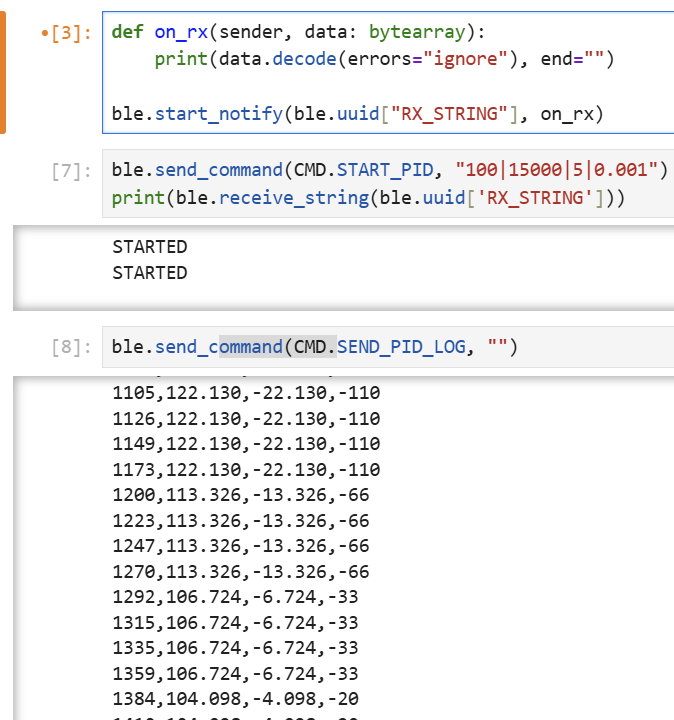
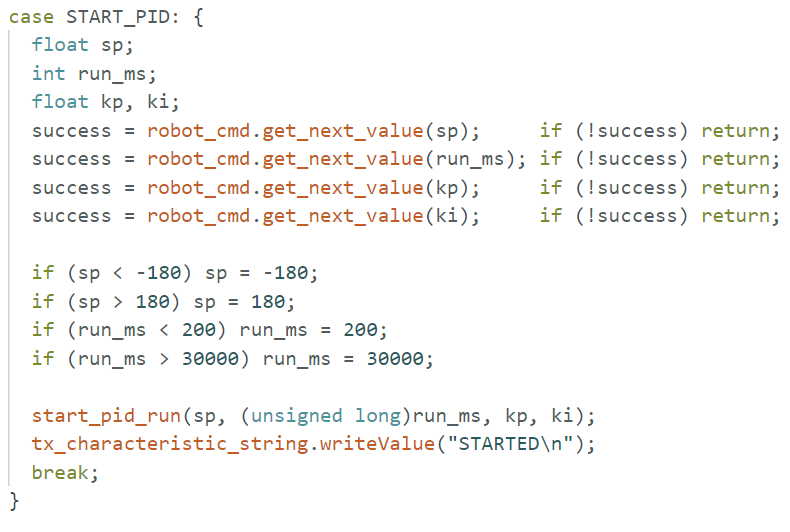
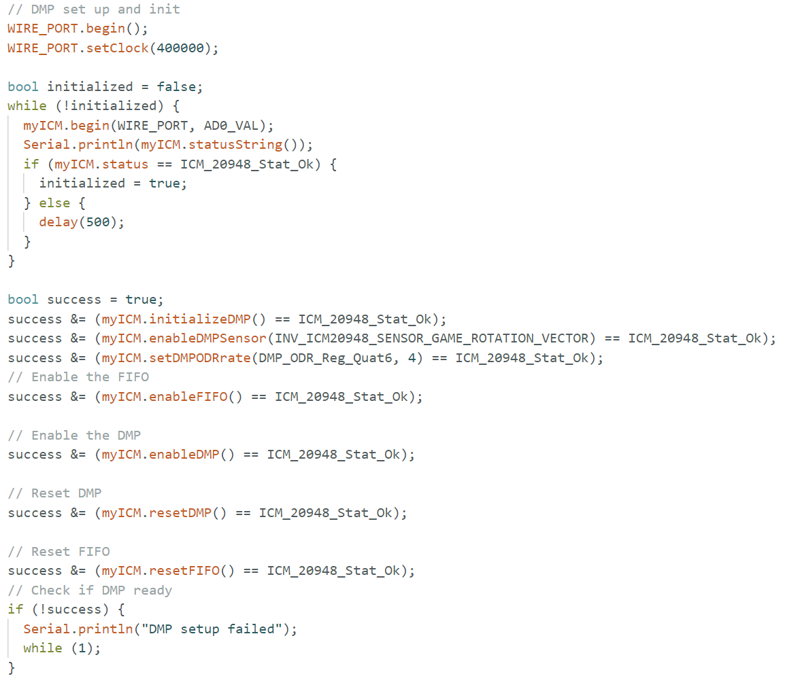
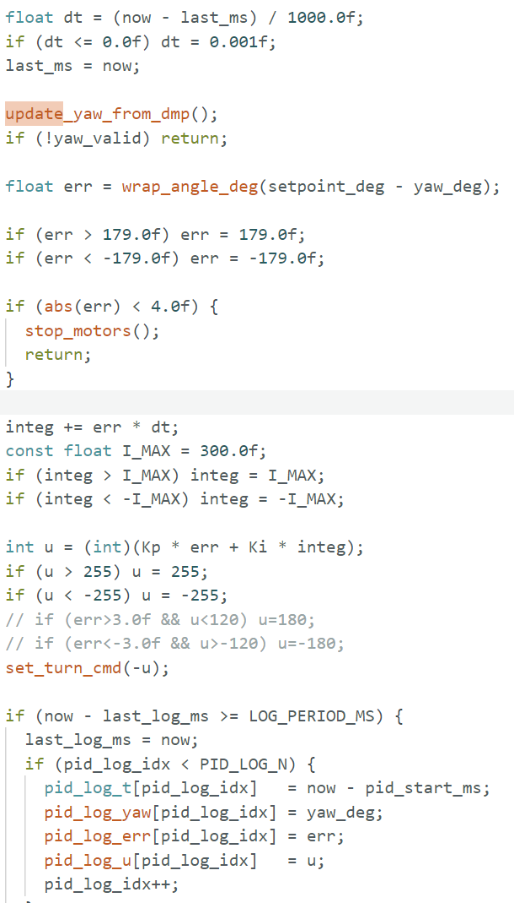
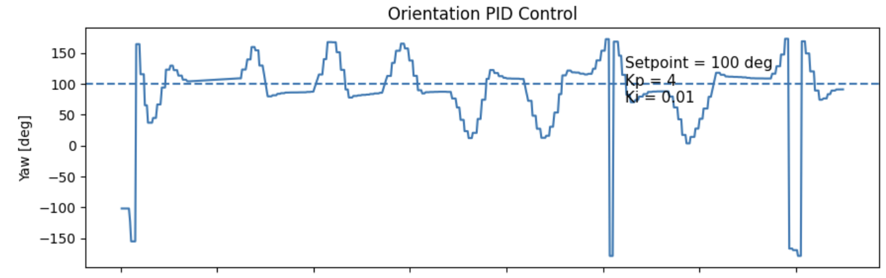
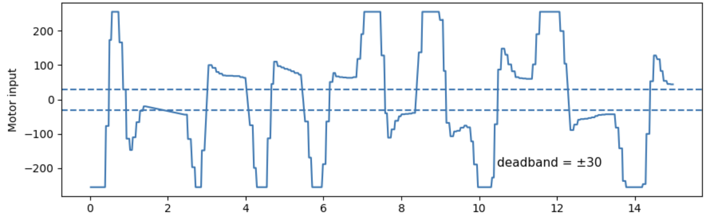
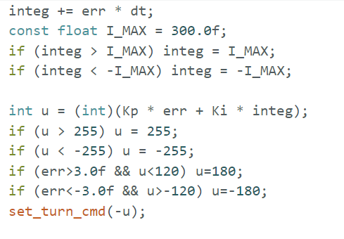

Hetao Yin (Hubery) — ECE 5160 Fast Robots
The goal of this lab was to implement stationary orientation control using the IMU yaw angle. Compared with Lab 5, the feedback signal was changed from ToF wall distance to orientation, and the motor command became a differential drive command for in-place turning. I used the ICM-20948 DMP output to estimate yaw, and I logged time, yaw, error, and motor input through BLE for controller tuning and plotting.
I kept the same BLE framework from earlier labs and added commands to start a timed orientation-control run and to send the logged CSV back to the laptop. The robot continued processing BLE commands while the controller was running, which made it possible to quickly retune gains and repeat tests without a USB connection.
# Python notebook command examples
ble.send_command(CMD.START_PID, "100|10000|4|0.01")
print(ble.receive_string(ble.uuid['RX_STRING'])) # STARTED
ble.send_command(CMD.SEND_PID_LOG, "")
# Receive CSV lines between PID_BEGIN and PID_END and save to file
On the Artemis side, I added a start command for orientation trials and another command to stream the saved log. The log format used the columns t_ms,yaw_deg,err_deg,u.

Instead of integrating raw gyroscope data in software over long time windows, I used the IMU DMP quaternion output and converted it to yaw. This reduced drift compared with plain gyro integration and gave a stable heading estimate for closed-loop control. I also measured a startup offset and subtracted it so that the reported yaw angle was easier to interpret during tuning.

I implemented absolute-angle control using the error err = wrap_angle_deg(setpoint_deg - yaw_deg). The motor output was a differential turning command so the wheels spun at the same magnitude in opposite directions. I first tested proportional control only, then added a small integral term to reduce the steady-state error that appeared near the target angle.
In practice, the robot could often reach the general neighborhood of the target angle with P control, but it sometimes stopped a few degrees away because the remaining motor command was too small to overcome friction and deadband. Adding a small integral term helped push the heading closer to the setpoint. I used final gains of Kp = 4 and Ki = 0.01 for the run shown below.

The gyroscope range must be large enough to cover the robot’s peak rotational speed during in-place turning; otherwise, the angular-rate measurement would saturate and the yaw estimate would become inaccurate. In my tests I did not observe obvious saturation, so the configured sensor range was sufficient for this lab. The log period was set to about 20 ms, corresponding to roughly 50 Hz logging. This was fast enough for stationary heading control because the robot’s yaw changed much more slowly than the update interval. A much slower sampling period would increase lag and make overshoot harder to control.
I collected one representative final run after tuning. The first plot shows yaw angle versus time, and the second plot shows the motor input versus time. The robot approached the commanded angle and the control effort decreased as the heading error became smaller.


The following video shows the robot performing in-place orientation control. During testing, the most common debugging issues were motor deadband, sign conventions for turning direction, and oscillation near the target angle.
The main challenge in this lab was not reading yaw from the IMU, but tuning the controller so that the robot both moved strongly enough to turn and settled close to the desired angle. Very small outputs near the target were often not enough to overcome motor deadband, while larger gains could cause overshoot or oscillation. Using DMP-based yaw feedback and BLE logging made it much easier to debug these issues. Overall, the controller achieved the lab goal of stationary orientation control using IMU yaw as feedback.
I limited the accumulated integral term to prevent integrator wind-up. This was useful because the motor command could saturate at large errors, and without clamping the integral term would continue growing and make the response more oscillatory once the robot approached the target heading.

In this lab, I used AI mainly to help organize the report structure, discuss debugging ideas, and refine parts of the controller implementation.